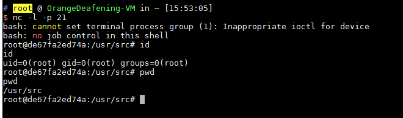

Python PIL/Pillow Remote Command Execution (GhostButt / CVE-2017-8291)¶
Python PIL (Pillow) is a popular image processing library for Python. It supports various image formats and provides powerful image manipulation capabilities.
The Python image processing module PIL (Pillow) is affected by the GhostButt vulnerability (CVE-2017-8291) because it internally calls GhostScript to process EPS images. This vulnerability allows attackers to execute arbitrary commands on the target system.
When PIL processes an image, it determines the image type based on the file header (Magic Bytes). If it identifies an EPS file (header starting with %!PS), it passes the file to PIL/EpsImagePlugin.py for processing.
In this module, PIL calls the system's GhostScript command (gs) to process the image file:
command = ["gs",
"-q", # quiet mode
"-g%dx%d" % size, # set output geometry (pixels)
"-r%fx%f" % res, # set input DPI (dots per inch)
"-dBATCH", # exit after processing
"-dNOPAUSE", # don't pause between pages,
"-dSAFER", # safe mode
"-sDEVICE=ppmraw", # ppm driver
"-sOutputFile=%s" % outfile, # output file
"-c", "%d %d translate" % (-bbox[0], -bbox[1]),
# adjust for image origin
"-f", infile, # input file
]
# Code to check if GhostScript is installed is omitted
try:
with open(os.devnull, 'w+b') as devnull:
subprocess.check_call(command, stdin=devnull, stdout=devnull)
im = Image.open(outfile)
Although the -dSAFER flag is set (safe mode), a sandbox bypass vulnerability in GhostScript (GhostButt CVE-2017-8291) allows this safety mechanism to be bypassed, enabling arbitrary command execution.
As of this writing, even the latest official GhostScript version 9.21 is still affected by this vulnerability. Therefore, as long as GhostScript is installed on the operating system, PIL is vulnerable to command execution.
References:
- Exploiting Python PIL Module Command Execution Vulnerability
- CVE-2017-8291 Details
- GhostScript Security Advisory
Environment Setup¶
Execute following command to start a web application that is vulnerable to the CVE-2017-8291 vulnerability:
docker compose up -d
After starting, visit http://your-ip:8000/ to access the upload page.
Vulnerability Exploitation¶
The normal functionality of this application allows users to upload a PNG file. The backend uses PIL to load the image and output its dimensions. However, we can exploit this by changing the extension of an executable EPS file to PNG and uploading it. Since the backend determines the image type based on the file header rather than the extension, the file extension check can be bypassed.
For example, we can upload poc.png, which will execute the command touch /tmp/aaaaa on the server. By modifying the command in the POC to a reverse shell command, we can obtain shell access to the server:
{kind=link}
